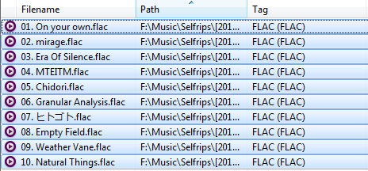

Access the Mp3tag options through the "Tools → Options" menu.
Select "Tag Sources → freedb" in the sidebar.
Enter the server domain or IP into the "Address" textbox.
Enter the path into the "Path" textbox (usually "/cddb").
If your server is not hosted on port 80, you must also include the port as part of the path (see image).
This is a bug in Mp3tag, the "Port" textbox does not do anything.
Click "OK".
Import the files for the album you want to tag into Mp3tag.
Select all files, in track order.
Tags will not be able to be found if any tracks are unselected or selected out-of-order.
With the files selected, access the freedb tag source through the "Tag Sources → freedb" menu.
Select "determine from selected files" and click "OK"
Confirm the tags and click "OK"
Tagging complete!